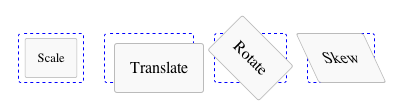

Transforms and Animations (CSS3)¶
One of the big pieces in the whole CSS3 world are animations and transforms with all the hype about 3D, hardware acceleration and the combinations of both of them. But as always, the various browser vendors don't introduce these new features at the same time, with divergent feature sets and using different CSS keys.
In order to address that, two classes have been added, one for transfoms (API) and one for animations (API). We kept the API close to the CSS spec, thus all those of you familiar with it will recognize it quickly. For all of you who have no idea about all that new CSS stuff yet, when you get in touch with the qooxdoo API, you will also learn parts of the spec!
Transforms¶
Transforms are basically defined by their transform function and are only good for transforming elements. They are not responsible for any dynamic movement of elements. The basic transform functions will give you an idea what is possible with transforms: Scale, Translate, Rotate, Skew.

But lets take a look at the transforms applied in the demo above.
var box = document.getElementById("scale");
qx.bom.element.Transform.scale(box, 0.8);
box = document.getElementById("translate");
qx.bom.element.Transform.translate(box, ["10px", "10px"]);
box = document.getElementById("rotate");
qx.bom.element.Transform.rotate(box, "45deg");
box = document.getElementById("skew");
qx.bom.element.Transform.skew(box, "25deg");
There is a lot of other stuff you can do with the new Transform class. A demo shows all the possibilities the native Transform API has to offer and with that, also what is provided by the qooxdoo wrapper. For the best result, use a webkit-based browser like Safari or Chrome to view the demo.
Animations¶
Only with animations does dynamic behavior come into the application. As you can expect, animations define a change of something over a given amount of time. That's the key feature of animations. But what can be changed and how can we define that? The first question is easy to answer: We can change CSS properties. To answer the second question, see the following code:
var desc = {duration: 1000, timing: "ease-out", keyFrames : {
0 : {"width" : "30px"},
70 : {"width" : "100px"},
100 : {"width": "30px"}
}};
var box = document.getElementById("box");
qx.bom.element.Animation.animate(box, desc);
The main part of this code is the key frames map, here with three entries. The first one defined by 0 specifies the animations at the beginning of the animation. The next one defined by 70 holds the CSS properties at 70% of the animation time. The last one specifies the animation's state at 100% animation time. That is an easy animation which only takes simple CSS properties into account. But you can also animate transforms, which brings both technologies together.
Take a look at this demo, showing a 3D rotation which you can try yourself. It shows the best results if you use a webkit-based browser like Safari or Chrome.